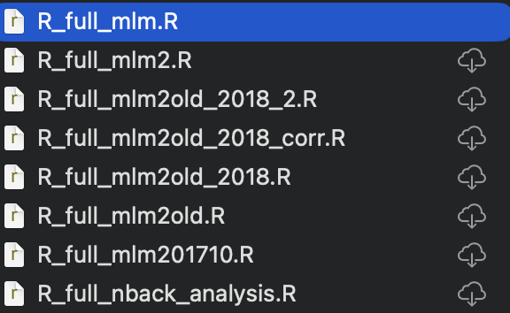
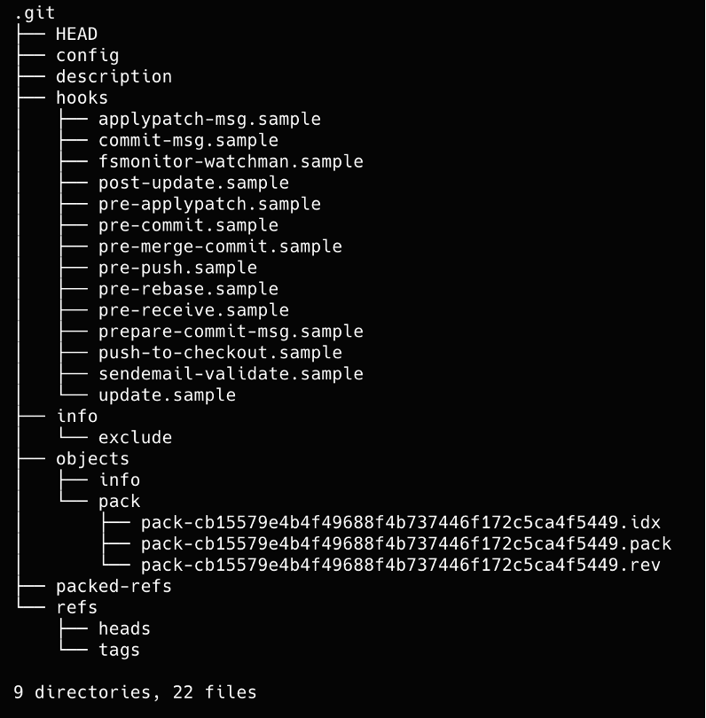
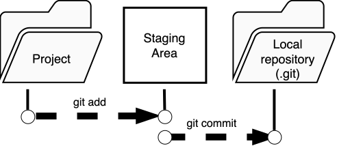

Intro to Git¶
- Format: Lecture
- Teacher: Andreas
Content TODO
This session page is a placeholder. Add learning goals, materials, exercises, and links here.
Why Git?¶
If you have ever worked on an analysis long enough, you will recognise the folder in the image below: a collection of files named analysis_final.R, analysis_final2.R, analysis_FINAL_v3_USE_THIS.R, and so on. Each file represents an attempt to preserve a working state before making a risky change, but without any record of what changed, when, or why. This approach breaks down quickly — it is difficult to know which version produced which result, nearly impossible to undo a specific change without losing other work, and a serious obstacle to collaboration and reproducibility.

Git solves all of these problems systematically. Rather than duplicating files manually, Git maintains a complete and structured history of every change to your project. You can return to any previous state at any time, compare exactly what changed between two points in time, work on experimental changes without disturbing the stable version, and collaborate with others without overwriting each other's work. For researchers, this is not just a convenience: a version-controlled analysis is transparent, auditable, and far easier to share, review, and reproduce.
Git short (version) history¶
Git is a Distributed Version Control System (DVCS) — a tool that records the full history of changes to a set of files and allows multiple people to work on those files independently and in parallel.
Git was created by Linus Torvalds in 2005, originally to manage the source code of the Linux kernel after the project outgrew its previous version control tool. Torvalds designed it to be fast, simple, and fully distributed, meaning that every contributor holds a complete copy of the repository and its history — there is no single point of failure.
A common point of confusion for newcomers is the relationship between Git and GitHub. Git is the version control software itself: it runs locally on your computer and has no dependency on the internet. GitHub is a commercial web platform built on top of Git that adds hosting, a browser interface, issue tracking, and collaboration features such as pull requests. You can use Git without GitHub entirely, and GitHub is just one of several hosting services — others include GitLab and Bitbucket. Think of Git as the engine and GitHub as one particular garage where you can park and share your work.
How does Git work¶
Each time you commit, Git takes a snapshot of your entire project — not just the lines that changed, but the full state of every tracked file at that moment. This is different from older version control systems that stored only the differences between versions. The result is that any past state of the project can be reconstructed instantly and completely.
Because every contributor holds a full copy of the repository, almost every operation Git performs — browsing history, comparing versions, creating branches, staging changes — happens entirely on your local machine with no network required. This makes Git very fast compared to centralised systems where each operation has to talk to a remote server.
Git also makes it practically impossible to lose or corrupt work silently. Every file and every commit is identified by a cryptographic hash — a long fingerprint such as 4f5a318668c47e266fd679f84b53ce2dfab08129 — computed from the exact contents of that object. If even a single character changes, the hash changes completely. Git checks these hashes automatically, so any accidental or malicious modification to the history is detected immediately. This property makes Git not just a collaboration tool but also a reliable audit trail for your analysis.
The database¶

When you run git init in a folder, or clone an existing repository, Git creates a hidden directory called .git inside your project folder. This is the database — it contains the entire history of your project: every commit, every version of every file, every branch, and every tag, going all the way back to the very first change ever recorded.
The .git directory is self-contained and portable. If you copy the folder to another machine, you bring the full history with you. If you delete a file from your project by mistake, Git can restore it from the database. If you want to see what your analysis looked like six months ago, Git reads it directly from there.
You almost never need to look inside .git yourself — Git commands are the interface to it. But it is useful to know it exists and what it represents: it is the single source of truth for everything Git knows about your project. The one important rule is to never edit files inside .git manually, as doing so can corrupt the history in ways that are difficult to recover from.
The file change process¶
Understanding how Git moves changes from your editor to the permanent history is the single most important conceptual hurdle for new users. Git does not record changes automatically as you save files — it gives you deliberate control over what gets recorded, and when.
The process has three local stages:

1. Working directory
This is simply the folder on your computer where your project files live. When you edit a script, add a data file, or delete something, those changes exist only here. Git is aware that something has changed, but has not been asked to do anything about it yet. You can see the current state at any time with git status.
2. Staging area (also called the index)
Before a change is committed to history, you explicitly select which changes to include using git add. This moves the selected changes into the staging area — a preparation zone that holds exactly what your next commit will contain. The staging area lets you be precise: if you changed three files but only two of them belong to the same logical unit of work, you can stage just those two and commit them separately from the third.
3. Repository (the .git database)
Running git commit takes everything in the staging area and writes it permanently into the repository as a new snapshot. You provide a short message describing what the change represents and why. From this point on, the commit is part of the immutable history and can always be retrieved.
A typical cycle looks like this:
# 1. Edit files in your project as normal
# 2. Check what has changed
git status
# 3. Stage the changes you want to commit
git add analysis.R
# 4. Commit them to the history with a message
git commit -m "Add outlier removal step to preprocessing"
Repeating this cycle — edit, stage, commit — is the core rhythm of working with Git. Each commit is a deliberate, documented decision rather than an automatic save, which is what gives the history its value as a record of how and why the analysis evolved.